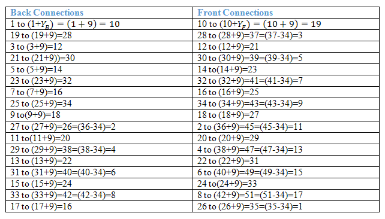

In this type of winding the coil side(A-B) progressforward around the armature to another coil side and goes on successively passing through N and S pole till it returns to a conductor (A1-B1) lying under the starting pole.
This winding forms a wave with its coil, that’s why it is named as wave winding. It is also called series winding because its coils are connected in series.
Progressive wave winding
If after one round of the armature the coil falls in a slot right to its starting slot the winging is called Progressive wave winding.
Retrogressive wave winding
If after one round of the armature the coil falls in a slot left to its starting slot the winging is called Retrogressive wave winding.

Here in the picture above we can see that 2nd conductor CD is in the left of the 1st conductor.
Important points about Wave winding
In simplex wave winding
Back pitch(YB) and front pitch (YF) are both odd and are of same sign.
Back pitch and front pitch are nearly equals to the pole pitch and may be equal or differ by ±2. + for progressive winding, - for retrogressive winding.
here, Z is the no of conductors in the winding. P is the no of poles.
average pitch (YA) must be an integer no. because it may close itself.
±2 is taken because after one round of the armature the winding falls sort of two conductors.
If average pitch is taken Z/P then after one round the winding will close itself without including all coil sides.
Since average pitch must be an integer, this winding is not possible with any no. of conductors.
Let us take 8 conductors in a 4 pole machine.

Being fractional no the wave winding is no possible but if there was 6 conductors then the winding can be done. Since,
For this problem the DUMMY COILS are introduced.
Dummy Coil
The wave winding is possible only with particular number of conductors and slots combinations. It is not always possible to have the standard stampings in the winding shop consist of the number of slots according to the design requirements. In such cases dummy coils are employed. This coils are placed in the slots to give the machine the mechanical balance but they are not electrically connected to the rest of the winding.
In multiplex wave winding …
m is the multiplicity of the winding.
m = 1 for simplex winding
m = 2 for duplex winding.
\;=\;\frac{Z\;\pm\;2m}{P}\; and\; it \;must\; be\; an\; integer.")
Construction of Wave winding
Let us develop a simplex and progressive wave winding diagram of a machine having 34 conductor in 17 slots and 4 poles.
Average pitch:
Now we have to construct a table for the connection diagram:

Winding Diagram
Characteristics and advantage of simplex wave winding
- In this winding only two brushes are required but more parallel brushes can be added to make it equal to the no. of poles. If one or more brushes set poor contacts with the commutator, satisfactory operation is still possible.
- This winding gives sparkles commutation. The reason behind that it has two parallel paths irrespective of no of poles of the machine. The conductors in each of the two parallel path distributed around the armature in the entire circumference.
- No. of conductors in each path = Z/2 , Z is the total no. of conductors.
- Generated emf = average emf induced in each path X Z/2
- For a given no of poles and armature conductors it gives more emf than that of lap winding. Hence wave winding is used in high voltage and low electric current machines. This winding is suitable for small generators circuit with voltage rating 500-600V.
- Current flowing through each conductor
Ia is the armature current. Current per path for this kind of winding must not be exceeded 250A. - Resultant emf around the entire circuit is zero.
- Wave winding cannot be used in the machines having higher electric current rating because it has only two parallel paths.
 by
by